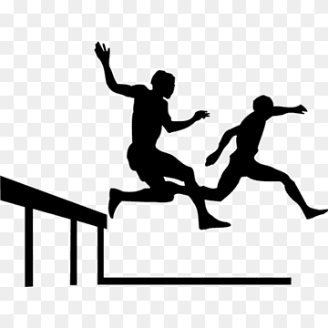
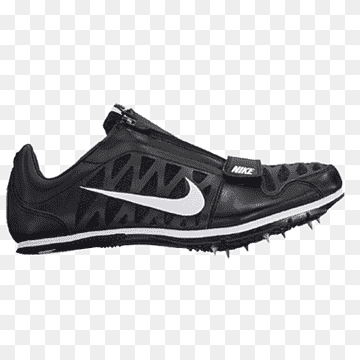

Running, leaping, and throwing-based athletic competitions are included in the sport of track and field. It is one of the oldest competitive sports in existence and a significant part of the Olympic Games. The term "track and field" refers to the standard competition location, which consists of a running track for the running events and a grass field for the jumping and throwing sports.
In the olympics a variety of physical events and talents are displayed. Track & Field is frequently regarded as one of the Olympic Games' hallmark sports. International athletes compete in a variety of track and field events to try to win medals and represent their nations internationally.
Sprinting Events: There are many different sprinting events in track & Field such as the 60m,100m,200m,400m dash.